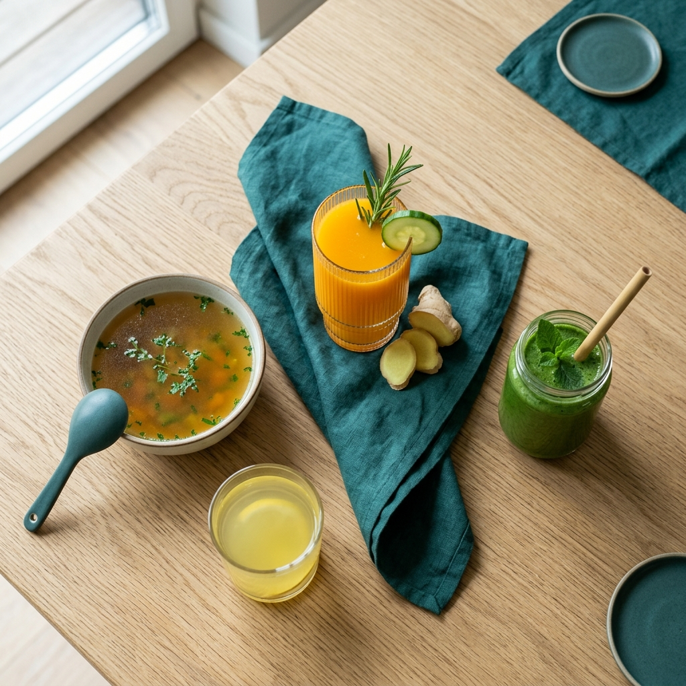
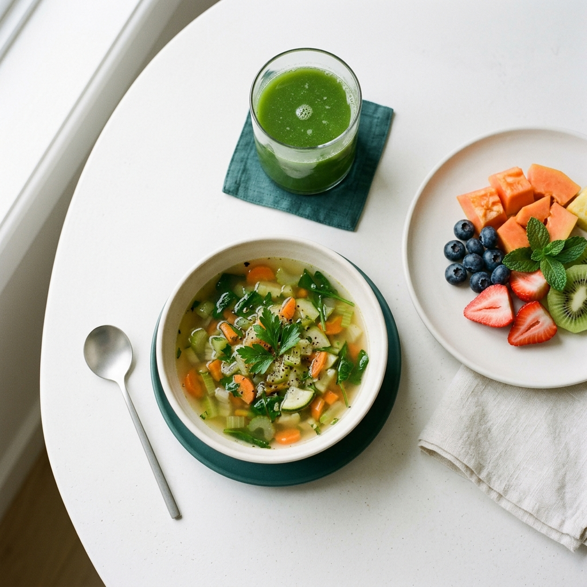

¿Cómo es el ayuno con Sirope de Savia?
3 DÍAS
Pre - Ayuno
▾ Toca para ver detalle

Se consumen frutas y verduras en jugos y sopas. Haciendo una transición de sólidos a líquidos en estos 3 días.
5 DÍAS
Ayuno con Sirope de Savia
(Jarabe de Arce y Palma)
▾ Toca para ver detalle

Se consume la mezcla de Sirope de Savia, junto a las infusiones y homeopatía recomendada.
3 DÍAS
Post - Ayuno
▾ Toca para ver detalle

Se consumen frutas y verduras en jugos y sopas. Haciendo una transición de líquidos a sólidos en estos 3 días.